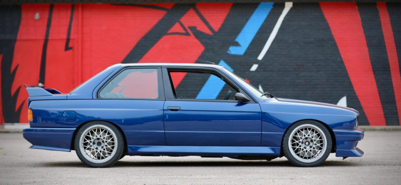

Tratamiento Cerámico

Nuestro servicio de Tratamiento Cerámico va más allá de una simple aplicación de una protección. Nosotros llevamos la estética de tu vehículo a otro nivel. Este servicio incluye la limpieza detallada de toda la unidad, el lavado de motor y descontaminación férrica de las llantas, en cualquiera de las opciones de este servicio que tenemos para ofrecerte.
Como su nombre lo indica es una secuencia de procesos que incluye el lavado, descontaminado y el pulido que requiera la unidad dependiendo del estado para alcanzar nuestro estándar de entrega.
Por último la aplicación de un coating o sellador cerámico que en su mayoría está compuesto por silicio, cuarzo, titanio o flourcarbono, lo que transforma a la pintura en una superficie con propiedades antiadherentes, hidrofóbica y con una capacidad de resistencia química y abrasiones increíble.
El Tratamiento cerámico es la mejor opción para proteger la pintura de tu auto desde el primer día o devolverle la vida y dejarlo como 0km.
Pre-Venta
El servicio "Pre Venta" está conformado por una serie de procesos de detallado para revitalizar y revalorizar el vehiculo.
Es un servicio pensado para aquellos que compraron un vehiculo usado y desean poder renovar su imagen y su higiene o para quienes desean vender su vehículo y aumentar su atractivo y valor. Con éste Pack completo integral su vehículo lucirá impecable por dentro y reluciente por fuera, un cambio imprescindible para quienes desean vender su vehículo rápidamente o para quienes desean poder estrenar su auto usado.
Sus procesos son:
Detallado completo de carroceria, motor e interior.
Extracción de butacas, asientos y alfombras, descontamiando y limpieza de estos.
Desengrasado, descontaminado y acondicionado de todos los plásticos interiores y exteriores.
Abrillantado Premium: Es un proceso de pulido en un solo paso, donde no nos enfocamos en quitar la mayor cantidad de rayas, sino en realzar el brillo y profundidad del color del vehículo, luego finalizamos aplicando un sellador acrilico para darle una proteccion optima frente a agentes externos.
Polarizado/Plotteo
Colocamos láminas de polarizado, ploteo de carroceria y laminas ppf. También instalamos láminas anti vandálicas que aportan una seguridad extra al tu vehículo.
Estas retardan el ingreso forzado al interior y previenen de lesiones en caso de ruptura de alguno de los cristales.
La colocación de láminas solares no es solo una cuestión estética, también de salud. La tecnología y filtros que poseen los materiales con los que trabajamos te permiten protegerte de rayos nocivos para la salud y prevén el calentamiento excesivo del interior del auto, mejorando además el rendimiento del aire acondicionado.
Por otro lado si querés cambiarle el look a tu vehiculo sin tener que pintar te ofrecemos nuestro servicio de ploteo. Este consta de el revestimiento de la carroceria con un vinilo, además de renover tu vehiculo y darle otro toque estetico, este vinilo protege la pintura original frente a rayones y agentes externos.
El revestimiento con laminas ppf está pensado para proteger la pintura original ya que es una lamina que se regenera con el calor y además es totalmente transparente, para no perder la estetica original.
Lavado Premium
Nuestro servicio de Lavado Premium va más allá de un simple lavado. Llevamos la estética de tu vehículo a otro nivel.
Este servicio realiza una limpieza a través de un método seguro para todas las superficies que evitan que se rayen o se degraden. Además incluye el detallado de motor y pasarruedas, descontaminación férrica de llantas y una limpieza muy profunda del interior con la aplicación de nutridores y acondicionadores para cada superficie.
Este lavado está especialmente desarrollado para autos con tratamientos previos, ya que incluye la aplicación de boosters o potenciadores de la protección preexistente.